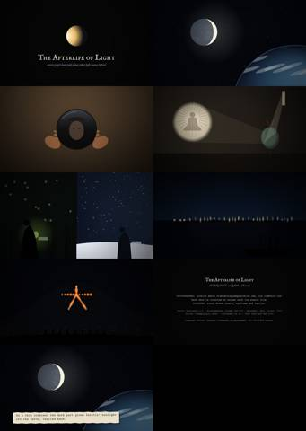
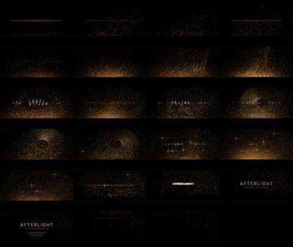
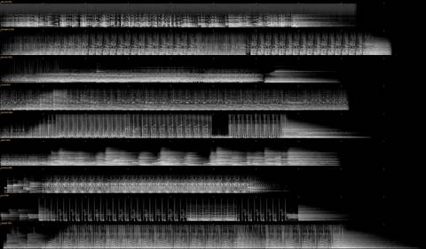
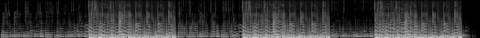

AFL-07 · Spacetime walk · 1:02 How it was made
Prologue
What light leaves behind
Every image is what light left behind.
Afterlight began with a narrow physical question: can moonlight warm a hand? Measurably, it cannot. Yet for two thousand years people have built mirrors, rituals and stories that credit the moon with warmth and dew. The project works in that gap, between what light does and what people credit it with.
This is the first trailer. It rebuilds archive film as points that keep the moment they were filmed, so whatever moved leaves a body of light through time.
The first prompt asked how people steer the relations among light sources, media, bodies and time. Over twenty-one versions the making repeated the subject, so each chapter here is read in those four terms: the note that started a version, how it was made, who received it, and what carried into the next.
- Source
- “We need to make a real unique trailer,” after a Gaussian-splat walk through foggy woods in x, y, z and time.
- Medium
- Each archive clip rebuilt as a volume of up to 1.5 million points. The newest frame faces the camera; earlier frames recede behind it. The title is drawn by the same renderer.
- Body
“The visual idea is that each image is only what light has left behind: figures and sources break into dust and smear.”
It also called the structure “metronomic, not escalating,” and named the moment that worked: “the drop to silence, then a single gold dot that blooms into the dust-built AFTERLIGHT title.”
- Time
- The gold dot became the ember, and the ember became the unit of every later version.

Version in this chapter
AFL-02 · The Cold Hand · 0:38 How it was made
I
Relation
Light is a relation. What it does depends on what receives it.
The first version was an instrument, not a film. A moonlit scene sat above six lanes (visible light, infrared, skin, meaning, control), and changing the source, the medium or the body showed what the light became. It was accurate and inert.
The second version turned the instrument into a scene that could be rendered again under different conditions: a bronze mirror, the fangzhu, set out under the moon in ancient China to gather dew. The moon is credited with the dew. The dew comes from a clear sky drawing heat out of the metal.
- Source
- “Uninspired and unwatchable.” Make it a story that can be rendered again and again across all the cases.
- Medium
- Six timed gestures of a cold hand in silhouette theatre, with counterfactual re-renders: take the moon away, clear every cloud, remove the storyteller.
- Body
Five critic rounds. The first: “The teller changes the world without touching it.”
The fifth: “Removing the moon leaves the 40 beads at identical times, removing the clouds gives 71 beads.”
- Time
- A rule for every later film: the storyteller’s marks never touch the world. And the theme in its first form: the moon gets the credit; the clear sky does the work.

Versions in this chapter
AFL-04 · The Afterlife of Light · 3:42 How it was made
II
Archive
The archive is light that was kept.
Film is the most literal afterlight: light that struck an emulsion decades ago, projected again. The third version drafted eight films from the archive, every keyframe labelled photographed or invented and every reference checked.
The fourth made one of them as an essay. Of 270 archive shots screened, nine were used. Where the archive had no true image, the film drew one and said so in the margin.
- Source
- Use real archival footage, and make a film that tells “the story of these stories.”
- Medium
- Typed paper slips over archive plates, a vertical PHOTOGRAPHED credit in the margin, drawn inserts tagged INVENTED, eleven chapters.
- Body
The first critic: “It plays as a list.”
After the repair the second critic proposed the question that would hold the cases together: “What does light leave behind?”
- Time
- The critic’s question became the project’s question. The film’s last card became its ethic: “Something always survives. Rarely the thing that gets the credit.”

Versions in this chapter
AFL-06 · Small Sun, third cut · 1:57 How it was made
III
Body
Warmth is light that a body kept.
The cases needed a story small enough to feel: a child, her grandmother, a cat, and a stone that keeps the warmth of the afternoon into the night.
The first cut was called a stilted PowerPoint. The rebuild studied Cartoon Saloon’s cut-out method and made the sound from the motion: as the animation renders it writes a log of every footfall, pounce, sneeze and purr, and the score is synthesized from that log.
- Source
- “The humanoids look bad and are unnatural compared with handmade cut-paper / Cartoon Saloon-style animation.” “We don’t do a lot of what’s fun.” Give them a cat.
- Medium
- A rigged cut-out cast drawn to a reference study of six traditions; event-log foley; one photographed image, the moon.
- Body
The critic failed the figures and passed the idea: “The rock holds the warmth.”
“The cat finds the warmth and the stone stores it.”
- Time
- Sound derived from the picture instead of laid under it. Every later score is built from the film’s own events.

Versions in this chapter
AFL-08 · Warm Cave · 1:21 How it was made
IV
Heat
When the picture goes, the heat stays.
The trailers went back to the archive with the story’s lesson. Warm Cave starts from Plato’s cave and asks what the prisoners’ skin knew. Each clip arrives on a scanline, older frames persist as infrared, and when the source goes out the room keeps its heat.
The next cut dropped the title cards and let seven archive voices speak once each. Each picture burns in from a slow front, and its light rises as embers that stay as stars.
- Source
- “Haunting, give goose bumps, hope and heat.” Then: “Think of the afterlife of the pixels more like embers burning above a fire into stars.”
- Medium
- Scanline arrival, infrared persistence, 24 animation techniques in a closing avalanche; then real frames burned in from noise fronts, shedding particles.
- Body
“Silence, the single ember, then AFTERLIGHT. This is the goose-bump beat and it works.”
Against it, the montage labels: “roughly 2.5 pt on a phone: unreadable.”
- Time
- Text left the screen. The ember stayed.

Versions in this chapter
AFL-11 · Light Alone · 1:18 How it was made
V
Song
Only light, answering sound.
Cutting to the song Warm Dome & Golden Record exposed what was still decoration: the animation did not follow the music and the words did not earn their place.
Light Alone removes everything but one field of embers in wind, and gives the song control of it. The kick spawns, the bass lifts, time slows in the break and speeds in the return. Each voice is drawn as a thread of light traced from its own waveform.
- Source
- “The animations we currently have don’t correspond and the words we use are sort of meaningless.” “No sense of anything but space and light and warmth.”
- Medium
- One particle field with curl-noise wind; kick, hat and bass mapped to spawn and speed; a Kokoro voice leads and archive voices answer.
- Body
No separate critic was run. The director’s next note was the review: “The voices are not good.”
- Time
- The voice was the last thing laid over the picture. The next chapter takes it apart.

Versions in this chapter
AFL-12 · The mix · 2:58 How it was made
VI
Sample
A sample is light that has left its source.
The last move turned the subject into the method. Nine tracks from the sessions were cut into mosaics, never the whole track, and each study was given its own picture technique: a 1950s television, long-exposure light painting, Gaussian splats, a spectrum pressed into a record, spacetime worms, a spectrogram terrain, a thirty-line Nipkow disk, a retinal afterimage.
The mix joins them, tempo climbing from 83 to 128 bpm. Where two techniques meet, the seam burns away and sheds embers.
- Source
- “I want each to be a mosaic assemblage of the tracks, never the whole track. Each a separate video experiment to see the samples, get the groove.”
- Medium
- Every cut is logged with the second of the source it came from. Each study’s page draws that log as a sample map against the whole source track.
- Body
The claim can be checked: Takumi Archive uses about 17% of its 2:53 source.
- Time
- The work is now made of what remained of other work.

AFL-21 · Copper Glow · 1:39 How it was made
Coda
Golden record
What arrives is what was sent, plus everything it passed through.
Copper Glow is the only track with words, and its words are the project’s: light-years, carry the glow, golden record. The Voyager record was made in 1977 for a listener its makers would never meet.
Each version of Afterlight was sent the same way, to a reader who would change it. The pages behind each film keep the notes, the prompts, the critics and the code, so the changes can be read.
- Source
- “Carry the glow,” “light-years to go,” “golden record,” and the opening lines.
- Medium
- The sung lines’ own spectrum drawn as a ribbon of light; its strongest partials break off as embers into the wind.
- Body
You.
- Time
- All twenty-one versions, each with its own page.

Version in this chapter